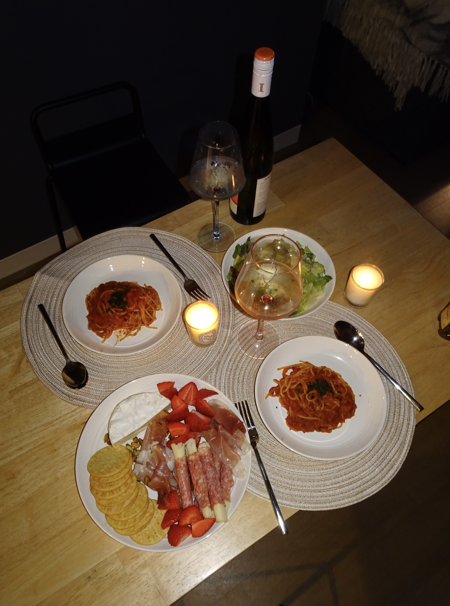
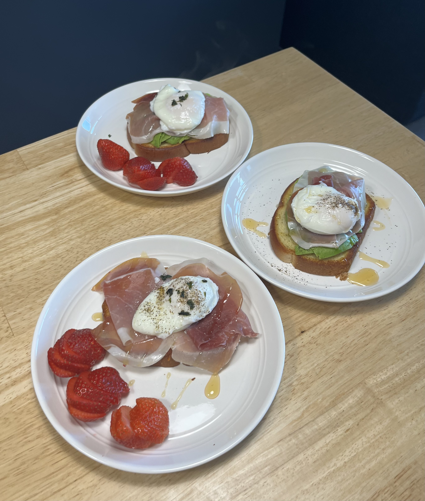
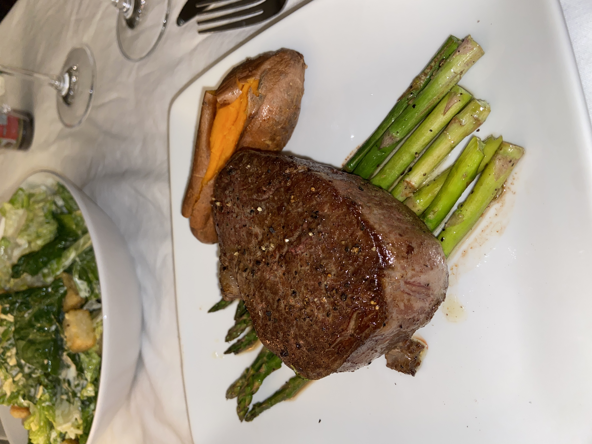
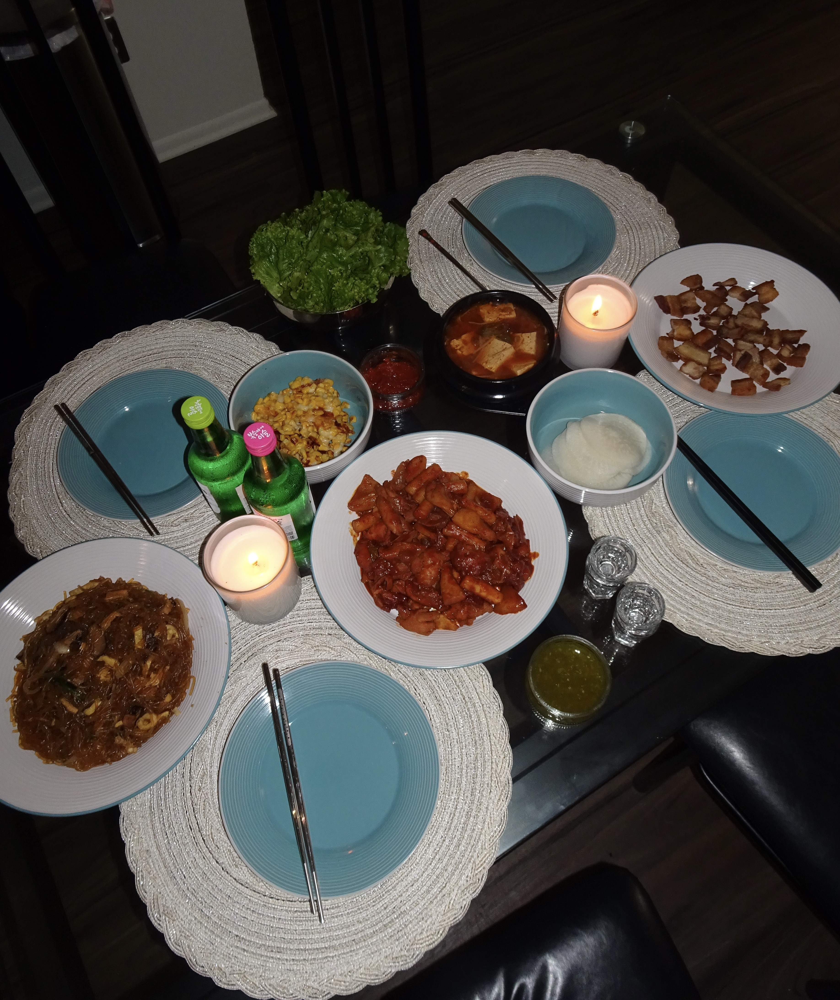
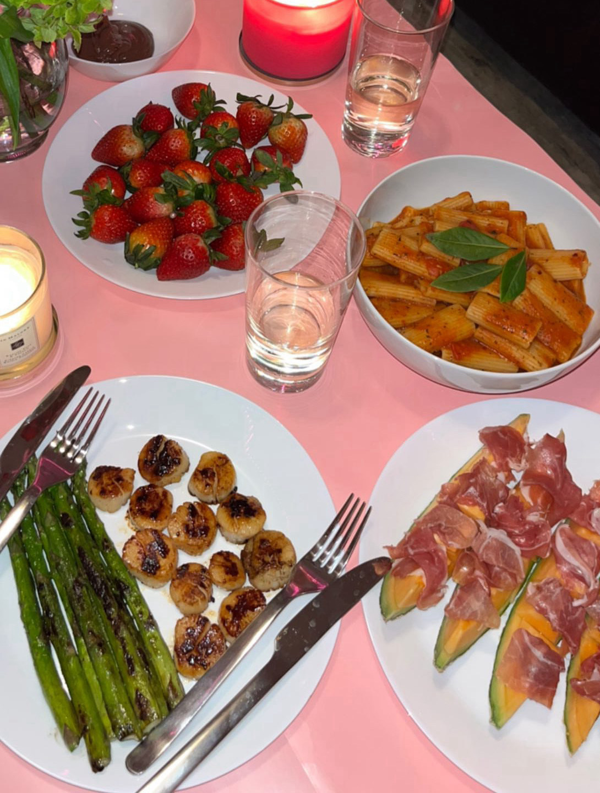

Tomato Basil Spaghetti
Origin: Italian Source: Personal Recipe Category: Main Dish
Tomato Basil Spaghetti is a classic Italian pasta dish that embodies the flavors of simplicity and freshness. The combination of ripe tomatoes, fragrant basil, garlic, and al dente spaghetti creates a dish that is both satisfying and easy to prepare.
Recipe Ingredients
- Spaghetti
- Olive oil
- Large ripe tomatoes
- Fresh basil leaves
- Salt
- Pepper
Recipe Steps
- Cook the spaghetti according to the package instructions until al dente. Drain and set aside.
- In a large skillet, heat the olive oil over medium heat. Add the minced garlic and sauté until fragrant.
- Dice the tomatoes and add them to the skillet. Cook for 5-7 minutes, seasoning with salt and pepper to taste.
- Add the cooked spaghetti to the skillet, tossing to combine with the tomato mixture. Cook for an additional 2-3 minutes.
- Plate the spaghetti and garnish with fresh basil leaves.
Additional Food images


Prosciutto Avocado Poached Egg Toast
Origin: Italian and American fusion Source: Personal recipe Category: Brunch
Prosciutto Avocado Poached Egg Toast is a fusion of Italian and American flavors. This dish combines the savory taste of prosciutto with the creaminess avocado and the gooey texture of a poached egg.
Recipe Ingredients
- 2 slices of artisanal bread (such as sourdough or ciabatta)
- 2 large eggs
- 2 slices of prosciutto
- 1 ripe avocado, thinly sliced
- 2 tablespoons white vinegar
- Salt and black pepper, to taste
- Fresh chives or microgreens (optional, for garnish)
Recipe Steps
- Toast the slices of bread until they reach your desired level of crispiness.
- While the bread is toasting, bring a large pot of water to a gentle simmer. Add the white vinegar to the simmering water.
- Carefully crack one egg into a small bowl. Create a gentle whirlpool in the simmering water by stirring it with a spoon, and then slide the egg into the center of the whirlpool. Poach the egg for about 3-4 minutes for a runny yolk, or longer for a firmer yolk. Repeat with the second egg.
- While the eggs are poaching, arrange the prosciutto slices on top of the toasted bread, followed by the thinly sliced avocado.
- When the poached eggs are done, remove them from the water with a slotted spoon, allowing excess water to drain. Place one poached egg on each toast.
- Season the eggs with salt and black pepper to taste, and garnish with fresh chives or microgreens if desired.
- Serve the Prosciutto Avocado Poached Egg Toast immediately, and enjoy!
Additional Food Images


Filet Mignon
Origin: French Source: Personal recipe Category: Main Dish
Filet Mignon is a French steak dish. It is the epitome of fine dining and is the perfect choice for special occasions or when you want to treat yourself to an exceptional meal.
Recipe Ingredients
- Filet mignon steaks
- Salt and black pepper
- Olive oil
- Cloves garlic, minced
- Fresh rosemary
- Unsalted butter
- Red wine
Recipe Steps
- Preheat your oven to 400°F (200°C).
- Season both sides of the filet mignon steaks generously with salt and black pepper.
- In an oven-safe skillet, heat the olive oil over high heat until it's almost smoking.
- Carefully add the seasoned filet mignon steaks to the hot skillet. Sear the steaks for about 2-3 minutes on each side, or until a golden-brown crust forms.
- Add minced garlic and rosemary sprigs to the skillet during the last minute of searing for additional flavor.
- Transfer the skillet with the seared steaks to the preheated oven. Roast for about 5-7 minutes for medium-rare, or longer to your preferred level of doneness.
- Remove the skillet from the oven and transfer the steaks to a plate. Cover them loosely with aluminum foil and let them rest for 5 minutes.
- While the steaks are resting, you can optionally deglaze the skillet with red wine or beef broth, scraping up any browned bits from the bottom. Reduce the liquid by half and whisk in the butter to create a simple pan sauce.
- Serve the Filet Mignon steaks hot, drizzled with the pan sauce if desired.
Additional Food images


Dakgalbi
Origin: Korean Source: Personal recipe Category: Main Dish
Dakgalbi is a beloved Korean dish known for its spicy and mouthwatering flavors. This main dish is a crowd-pleaser, combining tender pieces of chicken, tasty vegetables, and a spicy sauce that creates a symphony of tastes and textures. Whether you enjoy it as a comforting meal for two or a communal dining experience with friends, this dish is sure to satisfy your craving for a little heat and a lot of flavor.
Recipe Ingredients
- Boneless chicken thighs, cut into bite-sized pieces
- Cabbage
- Onion
- Potato
- Rice cakes
- Vegetable oil
- Cloves garlic, minced
- Gochujang (Korean red pepper paste)
- Soy sauce
- Sugar
- Mirin (rice wine)
- Sesame oil
Recipe Steps
- In a large skillet or pan, heat the vegetable oil over medium-high heat. Add the minced garlic and sauté for about 30 seconds until fragrant.
- Add the sliced cabbage, onions, and potato to the skillet. Stir-fry for about 5-7 minutes or until the vegetables start to soften.
- Add the chicken pieces to the skillet and cook until they start to brown and are no longer pink in the center.
- Stir in the gochujang, soy sauce, sugar, and mirin. Continue cooking for another 2-3 minutes
- Gently mix in the Korean rice cakes (tteok) and cook for an additional 3-5 minutes.
- Drizzle sesame oil over the dish and toss everything together. Cook for another 2 minutes.
- Serve the Spicy Chicken Dakgalbi hot, garnished with sesame seeds if desired.
Additional Food images


Prosciutto and Melon
Origin: Italian Source: Personal recipe Category: Appetizer
Prosciutto and Melon is a classic Italian appetizer that combines the sweet and juicy essence of ripe melon with the savory, saltinesshinly sliced prosciutto. It's a delightful appetizer that's both elegant and effortless.
Recipe Ingredients
- Ripe cantaloupe or honeydew melon, cut into wedges
- Prosciutto
Recipe Steps
- Arrange the bite-sized melon pieces or melon balls on a serving platter.
- Take a slice of prosciutto and gently fold or wrap it around each piece of melon.
- Continue this process until all the melon pieces are wrapped with prosciutto.
- Serve the Prosciutto and Melon as an appetizer or a refreshing snack.
Additional Food images